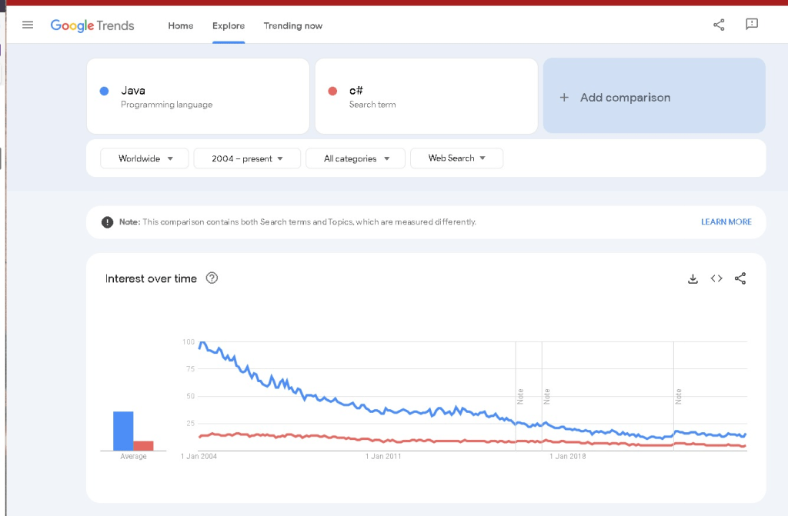
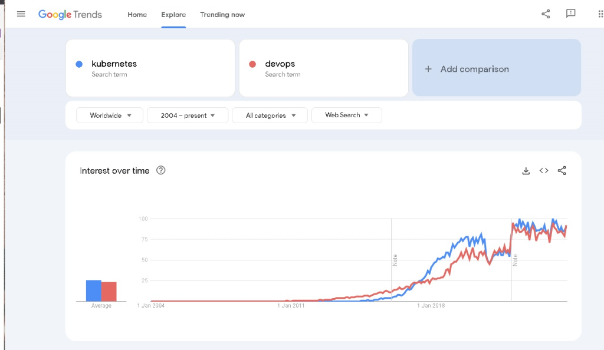

🌍 The Shift in Tech Trends: Java & C# vs. Kubernetes & DevOps 🚀


https://trends.google.com/trends/explore?date=all&q=kubernetes,devops&hl=en-GB
Over the past decade, we've witnessed a significant transformation in the world of technology and programming languages. If you've been following the trends, it's clear that Java and C#—once industry giants—are now on a downward trajectory in terms of popularity. However, the Kubernetes and DevOps ecosystem is experiencing a remarkable surge in demand, paving the way for the future of software development.
📉 Java and C# Are Not What They Used to Be
While Java and C# have been the backbone for many enterprise applications and are still widely used, they no longer dominate the tech scene. According to Google Trends data, their interest has been declining consistently over the past 10 years.
This decline can be attributed to several factors:
-
🌐 The rise of cloud-native technologies has made traditional monolithic applications less appealing.
-
🚀 Developers are gravitating towards more flexible, scalable, and modern languages.
-
🌱 The open-source community is pushing towards newer frameworks and tools, which further dilutes the dominance of Java and C#.
📈 The Rise of Kubernetes and DevOps
On the flip side, Kubernetes and DevOps have been trending upward over the same period, becoming essential in modern software development and deployment pipelines.
Why is this happening?
-
💡 Scalability & Automation: Kubernetes and DevOps practices empower teams to scale their applications effortlessly, ensuring smooth, automated deployments.
-
🛠️ Microservices Architecture: Kubernetes supports a microservices architecture, which is a growing trend in how applications are designed and deployed.
-
🌍 Cloud Adoption: The shift to cloud infrastructure (AWS, Azure, GCP) has made Kubernetes and DevOps a necessity for organizations looking to stay competitive.
📊 Google Trends Screenshot (Pause for a moment to reflect on the data)
This is where you can include a screenshot showcasing the clear trend shift between the two worlds—Java/C# on the decline and Kubernetes/DevOps on the rise.
🔎 Google Trends is a powerful tool to visualize and understand how the landscape of tech is evolving. As developers, it’s important to stay ahead of the curve and align our skills with the emerging technologies that will shape the future.
As we move further into the 2020s, Kubernetes and DevOps are defining the future of the tech industry, while Java and C# are no longer the go-to technologies for most new projects. The future is exciting, and it's an excellent time to jump into the world of cloud-native development and continuous integration.
🔗 Connect with me:
-
💼 LinkedIn: https://www.linkedin.com/in/rifaterdemsahin/
-
🐦 Twitter: https://x.com/rifaterdemsahin
-
🎥 YouTube: https://www.youtube.com/@RifatErdemSahin
-
💻 GitHub: https://github.com/rifaterdemsahin
Keep coding, keep learning, and stay ahead of the trends! 🌱
Imported from rifaterdemsahin.com · 2024